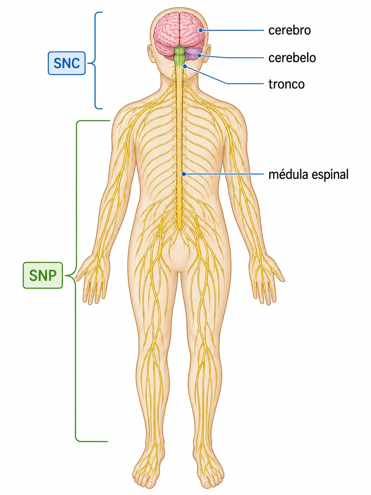
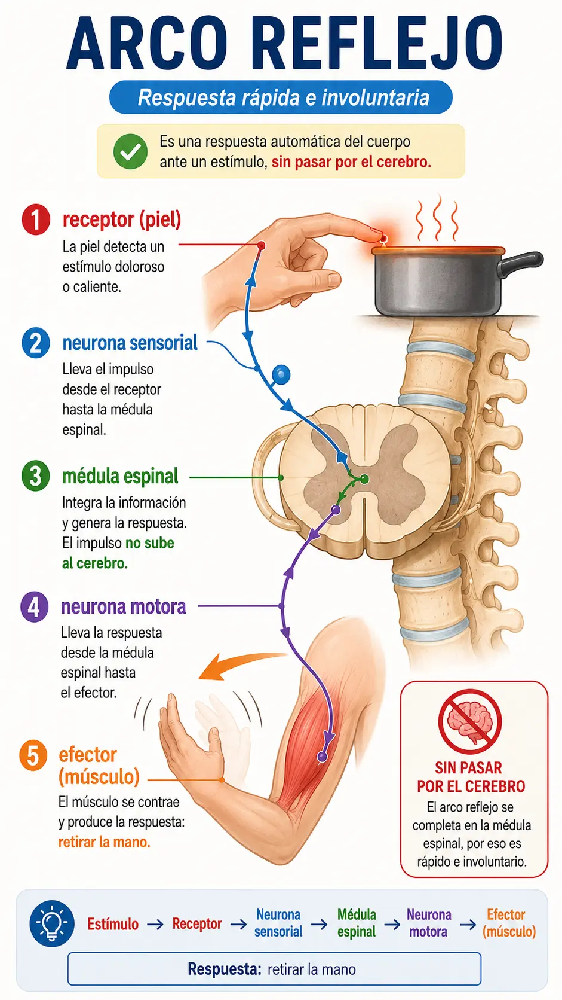
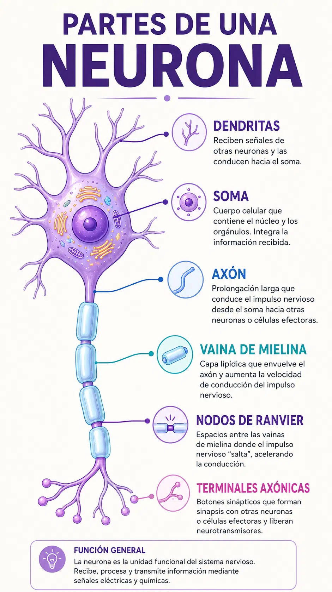
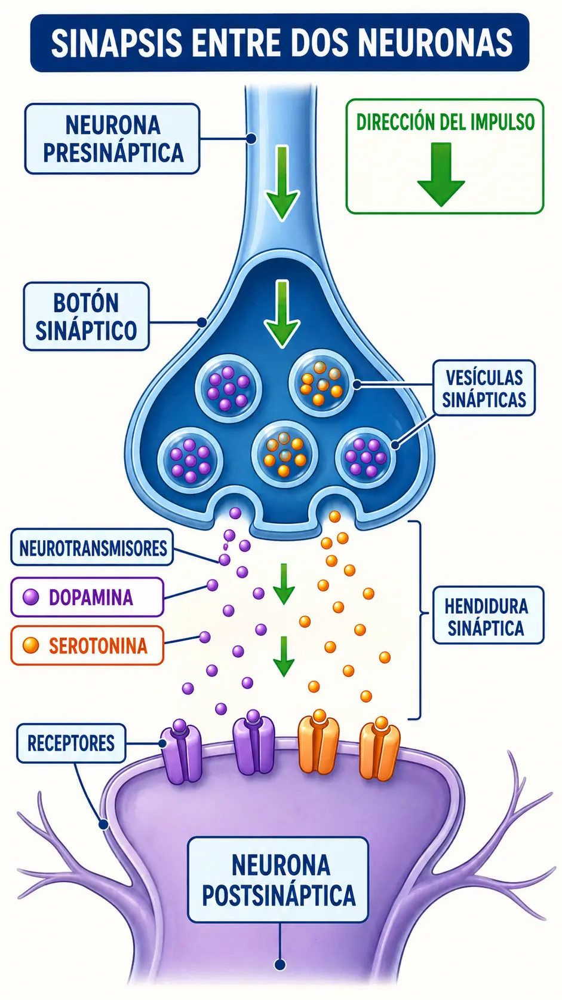
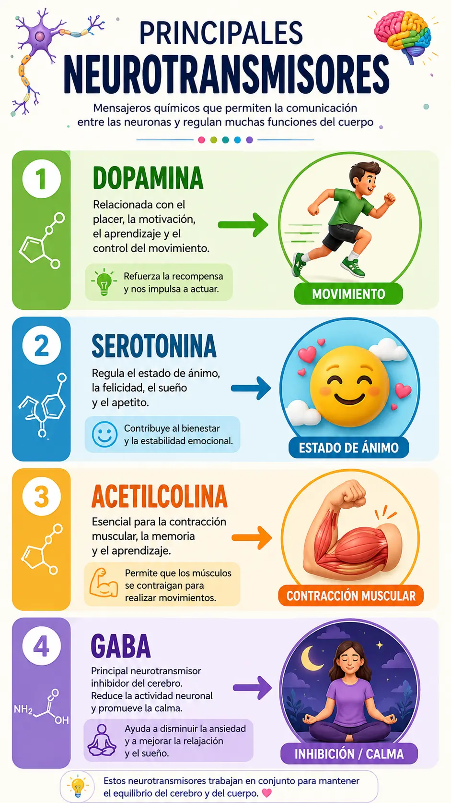
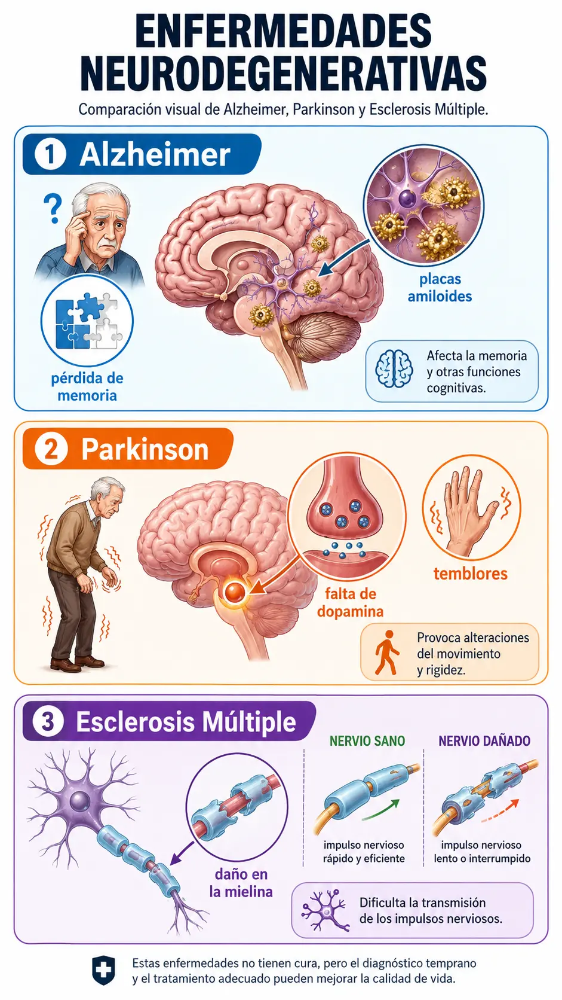
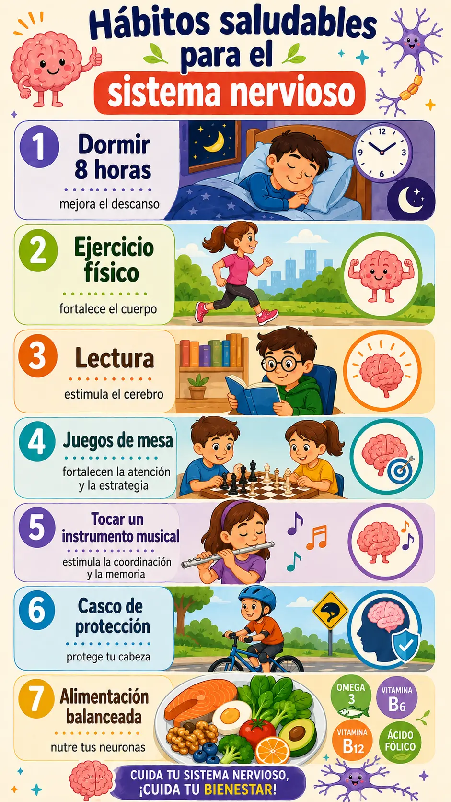

🧠 ¿Qué es el Sistema Nervioso?
El sistema nervioso es el sistema de control y comunicación del cuerpo humano. Recibe información del ambiente (estímulos), la procesa y envía respuestas a los músculos y glándulas. Está formado por el encéfalo, la médula espinal y todos los nervios periféricos del cuerpo.
⚡ Divisiones del Sistema Nervioso
🧠 Sistema Nervioso Central (SNC)
Formado por el encéfalo (cerebro, cerebelo, tronco encefálico) y la médula espinal. Es el centro de procesamiento: recibe, interpreta y genera respuestas a los estímulos. Protegido por el cráneo y la columna vertebral.
🔌 Sistema Nervioso Periférico (SNP)
Formado por los nervios craneales (12 pares) y nervios espinales (31 pares). Conecta el SNC con los órganos, músculos y receptores sensoriales del cuerpo. Se divide en voluntario (somático) e involuntario (autónomo).
✋ Sistema Nervioso Voluntario
Controla los músculos esqueléticos bajo control consciente: caminar, escribir, hablar, saltar. Las órdenes parten de la corteza motora del cerebro y viajan por nervios motores hasta los músculos.
💓 Sistema Nervioso Autónomo
Controla funciones involuntarias: latido cardíaco, digestión, respiración automática, control de la pupila. Se divide en simpático (activa en situaciones de estrés: "lucha o huye") y parasimpático (calma y restaura).

El arco reflejo es la respuesta más rápida del sistema nervioso. No pasa por el cerebro: el estímulo viaja de la neurona sensorial → médula espinal → neurona motora → músculo. Ejemplo: al tocar algo caliente, retiras la mano antes de sentir dolor.

🔬 La Neurona: unidad funcional
🔬 Partes de la neurona
Soma (cuerpo celular): contiene el núcleo.
Dendritas: reciben impulsos de otras neuronas.
Axón: transmite el impulso hacia otras células.
Vaina de mielina: acelera la transmisión del impulso.
⚡ Tipos de neurona
Sensorial (aferente): capta estímulos de receptores y los envía al SNC.
Motora (eferente): lleva órdenes del SNC a músculos y glándulas.
Interneurona: conecta neuronas entre sí dentro del SNC.

🧬 El Encéfalo: cerebro, cerebelo y tronco
🧠 Cerebro
La parte más grande del encéfalo. Dividido en dos hemisferios por el cuerpo calloso. La corteza cerebral controla el pensamiento, la memoria, el lenguaje, los movimientos voluntarios y los sentidos. El lóbulo frontal rige la personalidad y razonamiento.
⚖️ Cerebelo
Ubicado en la parte posterior del encéfalo. Coordina el equilibrio, la postura y los movimientos finos. No inicia movimientos: los afina y sincroniza. Un daño en el cerebelo produce ataxia (pérdida de coordinación motora).
🔗 Tronco encefálico
Conecta el cerebro con la médula espinal. Controla funciones vitales: respiración, frecuencia cardíaca y presión arterial. Incluye el mesencéfalo, protuberancia y bulbo raquídeo. Un daño grave en esta zona es incompatible con la vida.
🦴 Médula espinal
Cordón nervioso dentro de la columna vertebral. Conduce los impulsos entre el encéfalo y el resto del cuerpo. También procesa reflejos medulares (arco reflejo) sin necesitar al cerebro. Longitud aprox. 45 cm en adultos.
⚡ El Impulso Nervioso y la Sinapsis
⚡ ¿Cómo viaja el impulso?
Un estímulo genera un potencial de acción en la membrana de la neurona. Este impulso eléctrico recorre el axón hasta el botón sináptico, donde libera neurotransmisores al espacio sináptico que activan la neurona siguiente.
🔗 La sinapsis
Espacio entre dos neuronas. Los neurotransmisores (dopamina, serotonina, acetilcolina) cruzan la sinapsis química para transmitir el impulso. La mielina acelera el proceso saltando entre nodos de Ranvier (conducción saltatoria).

Receptor sensorial → Neurona sensorial → Médula espinal / Encéfalo → Interneurona → Neurona motora → Efector (músculo o glándula) → Respuesta.

⚠️ Enfermedades y Cuidados del Sistema Nervioso
🩺 Enfermedades principales
• Alzheimer: degeneración progresiva de la memoria
• Parkinson: pérdida de dopamina, temblores
• Epilepsia: descargas eléctricas anormales
• Esclerosis múltiple: daño a la mielina
• Meningitis: inflamación de las meninges
💚 Hábitos de cuidado
• Dormir 8–9 horas: consolida la memoria
• Ejercicio físico: aumenta BDNF (factor neuroprotector)
• Lectura y aprendizaje: fortalece redes neuronales
• Evitar alcohol y drogas: son neurotóxicos
• Casco en deportes: previene trauma craneal


🧪 Laboratorio del Sistema Nervioso
Selecciona una parte del sistema nervioso y un aspecto para explorar sus características. ¡Combina todos para aprender!
🃏 Flashcards — Toca para voltear
⭐ +1 XP por cada tarjeta volteada (primera vez)
🧠 Quiz de Comprensión
⭐ +5 XP por respuesta correcta (primera vez por pregunta)
Pregunta 1 de 9
🗂️ Clasifica los Conceptos
Selecciona un término del banco y toca la columna donde pertenece.
⭐ +5 XP al completar el grupo (primera vez)
💡 Consejo: ¡Usa el botón "Variar grupo" varias veces! Practicar con diferentes categorías te ayudará a dominar el tema.
Columna A
Columna B
🔍 Identifica el concepto
⭐ +5 XP por respuesta correcta (primera vez por pregunta)
Oración 1 de 8
Toca la palabra o término solicitado:
✏️ Completa la oración
⭐ +5 XP por respuesta correcta (primera vez)
Oración 1 de 8
🔗 Ordena: Ruta del Impulso Nervioso
⭐ +4 XP por orden correcto (primera vez por ruta)
Usa las flechas ▲ ▼ para poner los pasos en el orden correcto de principio a fin:
🔬 Identifica la Parte de la Neurona
⭐ +3 XP por respuesta correcta (primera vez por parte)
Parte 1 de 8
¿Cuál es la parte o tipo de neurona que se describe?
💊 Neuro-Empareja: Neurotransmisor → Función
⭐ +3 XP por respuesta correcta (primera vez)
1 de 5
¿Cuál es la función o enfermedad relacionada con este neurotransmisor?
🩺 Enfermedades: ¿Qué provoca cada una?
⭐ +3 XP por respuesta correcta (primera vez)
1 de 6
Selecciona la característica principal de esta enfermedad del sistema nervioso:
🏆 Reto Final — ¡30 segundos!
Clasifica el término del sistema nervioso rápidamente.
⭐ +1 XP correcto | ❌ -1 XP incorrecto (solo primera partida)
💡 Consejo: Al terminar, usa "Variar pareja" para jugar con otras categorías y ganar más agilidad.
🤍 Sopa de Letras
⭐ +1 XP por palabra encontrada (primera vez)
🖱️ Arrastra o haz clic en la primera letra, luego en la última
📋 Generador de Tareas
Evaluación Final · El Sistema Nervioso · II y III Ciclo · Ciencias Naturales
Valor total: 100 puntos · Cada respuesta vale 5 puntos
🎓 Evaluación Final — El Sistema Nervioso
Copia el examen en tu cuaderno y responde las preguntas, después selecciona Ver Pauta para que te autoevalúes. Genera nuevas preguntas cuando quieras.
📁 Recursos del Tema
Aquí encontrarás materiales de apoyo para esta misión: presentaciones, documentos PDF, guías de estudio y más. El docente irá agregando recursos en esta carpeta.
Abrir carpeta en Google Drive